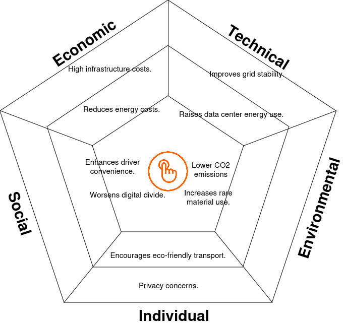

ChargEye: Charging Station Management System by Kempower Oyj

Kempower should invest in sustainable procurement and create initiatives for recycling rare earth elements to mitigate the negative effects. They should work with governments to finance installation in underserved areas in order to guarantee the fair distribution of EV infrastructure. Sturdy data centers can reduce environmental damage, while strong data security protocols can allay privacy worries. Lastly, creating inclusive software interfaces will contribute to closing the digital gap.